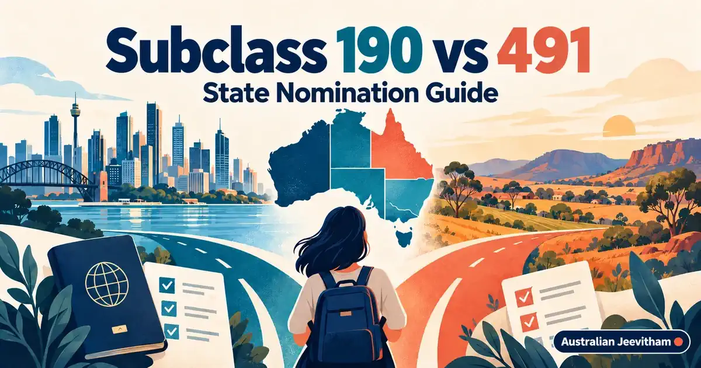
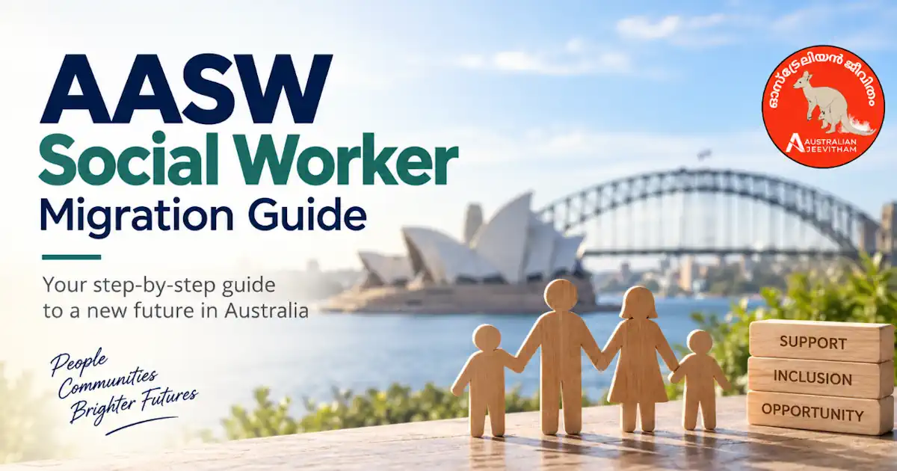

Subclass 190, 491 state nomination താരതമ്യ ഗൈഡ്Subclass 190 vs 491 State Nomination Guide
190 permanent visa ആണ്. 491 regional provisional visa ആണ്. Points മാത്രം നോക്കി തിരഞ്ഞെടുക്കാതെ residence obligations, state criteria, occupation demand, family plans എന്നിവയും പരിശോധിക്കുക. Both are points-tested pathways, and meeting 65 points does not guarantee an invitation.
By Binu Vadakkedath
Published and last updated: September 2026 · Verify current requirements with the linked official authorities

A state nomination is not automatic. ഓരോ state-നും സ്വന്തം occupation lists, work or residence rules, invitation priorities, allocation limits എന്നിവ ഉണ്ടാകും.
- 190 Permanent
- 491 Provisional
- State Nomination
- SkillSelect
- Regional Australia
This guide is general information, not migration, legal, education, employment or financial advice. Rules, fees, occupation lists and assessment processes can change. Verify your circumstances with the official authority and use a registered migration agent or qualified professional where personal advice is required. തീരുമാനം എടുക്കുന്നതിന് മുമ്പ് official website-ലെ ഏറ്റവും പുതിയ വിവരങ്ങൾ പരിശോധിക്കുക.
1. The core difference
Subclass 190 is a permanent skilled nominated visa. State or territory nomination adds 5 points to the points test. Subclass 491 is a five-year provisional visa for skilled people nominated by a state or territory or sponsored by an eligible relative. A qualifying 491 nomination or sponsorship adds 15 points.
2. Regional obligations for 491
491 holders must live, work and study only in a designated regional area while the relevant condition applies. For migration purposes, designated regional Australia includes many places beyond remote towns. Always check the official postcode list before choosing where to live or accept work.
A permanent residence pathway may become available after meeting the relevant requirements, including the required period. It is not immediate PR.
3. What both pathways require
- An eligible occupation and suitable skills assessment.
- An Expression of Interest in SkillSelect.
- The required age, English and points-test criteria at the relevant time.
- State or territory criteria for nomination, or eligible-relative sponsorship for the family-sponsored 491 pathway.
- An invitation before lodging the visa application.
4. Why 65 points is not a forecast
Sixty-five is the general threshold to be eligible for the points-tested process, not a promise of invitation. States rank candidates according to their own priorities, available allocations and current demand. Invitation scores and selected occupations can change between rounds.
Agent അല്ലെങ്കിൽ course provider പറയുന്ന പഴയ invitation score മാത്രം ആശ്രയിക്കരുത്. നിങ്ങളുടെ EOI details accurate ആയി update ചെയ്യുക.
5. How to choose
Choose 190 if your profile is competitive for permanent state nomination and you can meet that jurisdiction's criteria. Consider 491 if you genuinely intend to build your life in a designated regional area and understand the provisional conditions and later PR pathway.
Apply only to jurisdictions where you can meet the current rules. A broad strategy is not useful if it conflicts with residence, employment or commitment requirements.
Official sources and current checks
ഈ ലേഖനത്തിലെ പ്രധാന വിവരങ്ങൾ പരിശോധിക്കാൻ താഴെയുള്ള official links ഉപയോഗിക്കുക. Fees, processing times, eligibility എന്നിവ മാറാം.
Frequently asked questions
Is subclass 190 a permanent visa?
Yes. Subclass 190 is a permanent skilled nominated visa.
Is subclass 491 permanent residence?
No. It is a five-year provisional visa with regional conditions and a possible later permanent residence pathway if the applicable requirements are met.
Does 65 points guarantee an invitation?
No. It is the general eligibility threshold for points-tested visas, but invitations depend on ranking, occupation demand, state criteria and available allocations.
Can I live in Sydney on a 491 visa?
You must comply with the designated regional condition. Check the official regional postcode list before deciding where to live, work or study.
Skills assessments, settlement & life after PR

AASW Social Worker Guide
AASW Migration & Eligibility Assessment: 1,000-hour field education, IELTS Academic requirements, fees, and visa pathways for Kerala-qualified social workers.
- AASW / MEA
- 1,000 hrs Fieldwork
- IELTS Only

Superannuation Guide
12% SG rate, Payday Super, EPF/PF comparison, choosing and consolidating funds, and DASP for eligible former temporary residents.
- 12% SG Rate
- EPF vs Super
- DASP

Malayalam Resources Hub
A comprehensive directory of guides covering jobs, visas, healthcare registration, licence conversion, superannuation, and settling into Australia.
- 11+ Guides
- Jobs & Visas
- Settlement